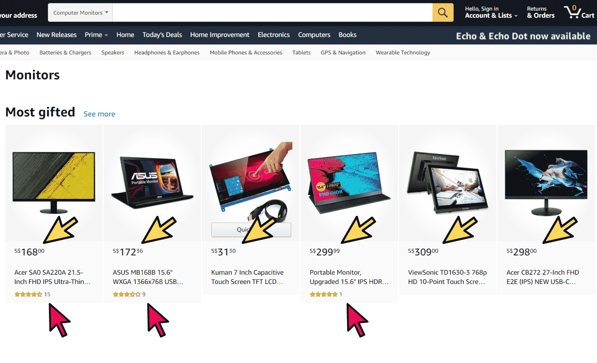
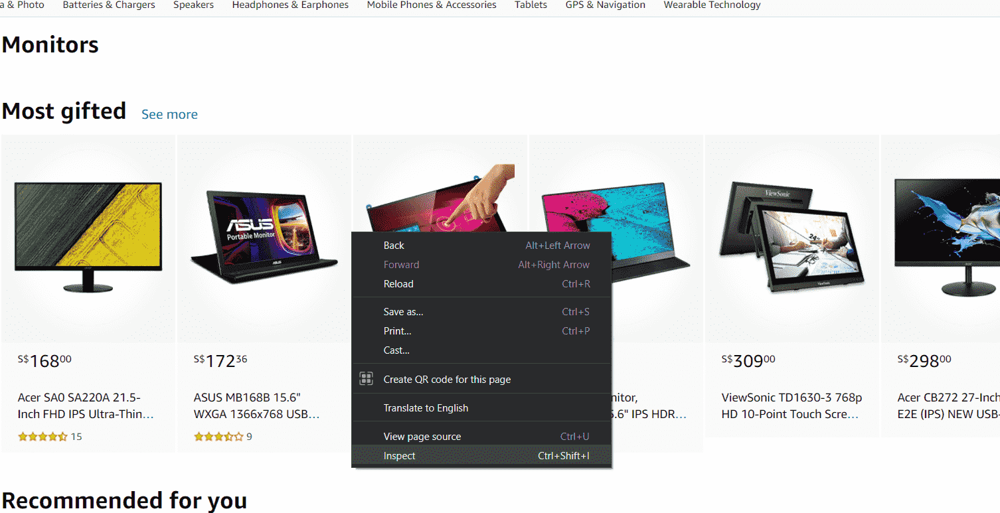

The internet today contains a staggering amount of data, making webscraping a powerful skill to learn. With data we gathered from the internet, we can use it for a multitude of purposes.
For example, we can collect data on stock prices off a financial data site so that we can determine good entries into the market!
Webscraping is often regarded as the first step to data analysis. How are can we analyse data if we don’t have any data in the first place? If you are someone that is interested in data analysis or even machine learning, webscraping is something you must understand and this article will help you do just that!
What is Webscraping?
Now, what in the world is webscraping? Webscraping is basically “scraping” or pulling data off of websites and consolidating it in another database for analysis.
Let’s say you are interested in buying a new Computer monitor. There are so many options available on Amazon and you are really struggling trying to find out which product gives you the best deal!
So many choices... How do we decide?
Here’s where webscraping can come into play. We can simply scrape all prices and ratings of each product on amazon and compare which product gives the highest rating per dollar! Of course, this is just one way of comparing the “value” of a product, but whatever metric you use, you must scrape data from the website to begin analysing it!
In general, Web scraping is the first step of any data-driven project. We collect the data using webscraping, clean the data to fit any model we are using to analyse it, analyse the cleaned data and finally produce solutions or predictions for the future!
The Data Science Process
Data Science is basically processing data from multiple sources and drawing predictions or conclusions from them. How does Webscraping fit into the Data Science puzzle?
A brief look at the entire data science process, from start to end!
Simply put, we must have data to process data. As I’ve said, Webscraping is one method of data collection. All the data on the internet is available for us to webscrape, and thus to process. With this data, we can move on to actually analysing the data.
How to Webscrape?
Now let’s get back to our Amazon Computer Monitor problem. We have determined the website we want to scrape from and the data we want to acquire, what’s next? There are so many things happening in a website, how can we specifically pick out the product's prices and ratings?

How do we pick out these prices and ratings?
To scrape websites, you need a little bit of knowledge about HTML and how websites are layed out. Knowing how our data is presented within the website allows us to pinpoint what we want to scrape from the website itself. With this basic knowledge of HTML, we can easily build future webscraping projects and collect data that we want. Don’t worry, we just need to know some simple basics!
Basics of HTML
What is HTML? Every website, no matter how fancy the graphics or how intricate the animations, has a skeleton. HTML can be seen as the skeletal backbone of every website on the internet. Understanding HTML will take quite a long time, but lucky for us when webscraping we simply need to understand some core principles.
Everything you see in a website is a HTML element, and every element has attributes. You can actually see these elements and the HTML code of a website simply by right-clicking the website and clicking on inspect! This is a very very important tool that we use for webscraping.

Simply right click and click on Inspect. This works on every website, go ahead and try it!
When we scrape information off the web, these attributes help us to differentiate between elements and pick out the specific elements we want! This is basically the backbone of most webscraping techniques, picking out elements we want to scrape using their unique attributes. You can try inspecting the page you are currently on right now! Do you realise that each element has some unique attributes that we can use to differentiate from the rest?
Dynamic Webscraping
One thing to take note of when webscraping is that every website is different. The most interesting thing about data collection and web scraping is that although every website has roughly the same skeletal layout (HTML), every website may load their data differently!
This means you as the programmer have to figure out which method is the most suitable way of scraping data from each specific website! This requires some exploration and experimentation, which I believe is the most interesting part about webscraping!
Every Website loads differently, so the only way to scrape them is to explore!
I have spent most of my time during my recent internship collecting data, so I have some experience in this field. Some websites are simple static websites that are easy to scrape, while others may have dynamically loaded layouts that require a more sophisticated script to collect data! Something I learned is that the most important thing about collecting data is fully understanding how to website is built before writing any webscraping script.
What's Next?
In upcoming articles, I will share some methods that I myself have used to scrape data from different kinds of websites, so stay tuned! I have many exciting projects lined up that will equip you with the skills necessary to scrape even the most advanced websites on the internet!
Just a heads up, Python is the common language people use for data collection and analysis, and it’s also the language that my upcoming articles will be using.
So brush up your Python and subscribe to our email newsletter to follow along on the upcoming Webscraping projects! Stay chill, cucumbers!